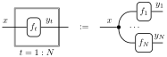
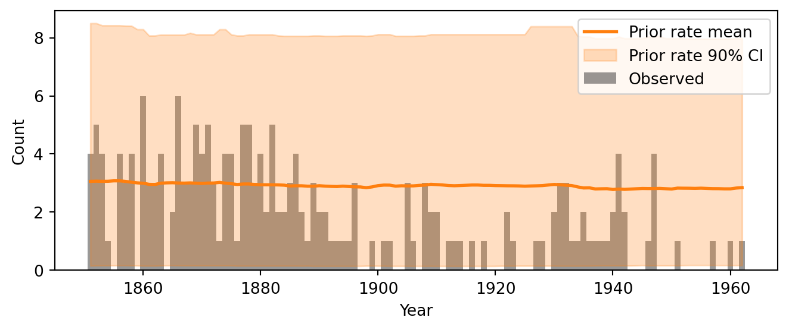
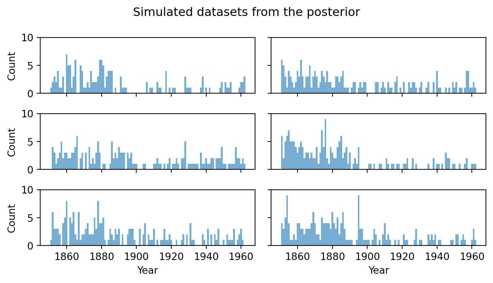
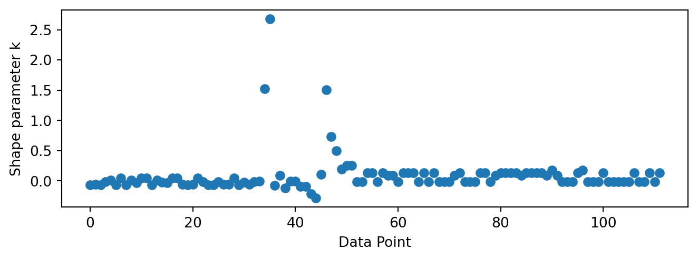

In the preceding chapters we developed the theory of Bayesian inference: how to specify a prior and a likelihood, and how to condition on observed data to obtain a posterior distribution. In principle, this is all there is to it. In practice, applying Bayesian inference to a real problem requires much more than computing a posterior. We need to choose a model, check that it makes sense before and after seeing the data, diagnose whether the computation succeeded, and compare alternative models. These activities — model building, checking, and revision — together form what is called the Bayesian workflow(Gelman et al. 2020).
This chapter walks through the Bayesian workflow end-to-end using a single running example: the UK coal mining disasters change-point model. Rather than treating each step in isolation, we build the analysis up incrementally, making each stage of the workflow concrete. The goal is not just to obtain a posterior, but to understand why we trust the answer.
The main stages of the workflow are:
Explore the data and formulate a question.
Conceive a model that encodes our assumptions.
Implement the model as a probabilistic program.
Choose priors and inspect them via prior predictive checks.
Simulate fake data with known parameters as a test bed.
Run inference — first on fake data to verify recovery, then on real data.
Explore the posterior to understand what the model has learned.
Criticize the model through posterior predictive checks.
Assess sensitivity to modeling choices.
Compare models and summarize conclusions.
These steps are not strictly sequential — in a real analysis we often loop back to revise the model after a check reveals a problem. We discuss this iterative aspect, along with other practical lessons, in the modeling tips at the end of the chapter (Section 5.12).
Software. We use NumPyro to specify models and run Markov chain Monte Carlo (MCMC) inference, and ArviZ for diagnostics, visualization, and model comparison. NumPyro is a probabilistic programming library built on JAX, which gives us automatic differentiation and hardware acceleration. ArviZ provides a unified interface for analyzing the output of Bayesian inference, regardless of the underlying inference engine. For a comprehensive treatment of exploratory analysis of Bayesian models with ArviZ, see Martin et al. (2025).
Required imports
import matplotlib.pyplot as pltimport numpy as npimport jaxfrom jax import randomimport jax.numpy as jnpimport numpyroimport numpyro.distributions as distfrom numpyro.infer import MCMC, NUTS, Predictiveimport arviz as azimport xarray as xrrng_key = random.PRNGKey(42)
5.1 Exploring data and problem specification
The dataset records the number of coal mining disasters in the UK with 10 or more deaths, per year, from 1851 to 1962. Coal mining was one of the most dangerous occupations of the industrial era, and the frequency of major disasters was a persistent public concern. Over the course of the 19th century, a series of regulatory acts — the Mines Regulation Act of 1860, the Coal Mines Regulation Acts of 1872 and 1887 — progressively mandated mine inspections, improved ventilation and lighting requirements, restricted child labor underground, and tightened safety rules.
Figure 5.1: Observed count of UK coal mining disasters (10+ deaths) per year, 1851–1962. The shaded region highlights the period in which the rate appears to change.
Figure 5.1 shows the raw data. The early decades (1851–1890) show a volatile but clearly elevated rate, typically 2–5 disasters per year with occasional spikes to 6. Somewhere between 1880 and 1900, the pattern changes visibly: the counts drop and stay low for the remainder of the record, with most years seeing 0 or 1 disasters. The shaded region marks this transitional window.
The visual impression is suggestive, but it raises more questions than it answers. The eye is drawn to the contrast between the early and late periods, but exactly when did the transition occur? Was it abrupt or gradual? And how confident can we be in any answer, given the year-to-year noise in the counts?
These are the questions we will formalize and answer with a Bayesian model. Specifically:
When did the disaster rate change? We want a posterior distribution over the year of transition, not just a point estimate — so that we can quantify our uncertainty.
By how much did the rate change? We want posterior distributions for the rate before and after the transition.
Is there evidence for a change at all? A constant rate with random fluctuations might explain the data just as well. We will compare models to find out.
5.2 Conceiving of the model
A good model tells a story about how the data were generated. Our story for the coal mining data goes like this: in each year, major disasters occur at random according to some underlying rate. That rate is not constant: at some unknown year \(\tau\), it switches from a higher value \(\rho_1\) to a lower value \(\rho_2\). Before the switch, the world is dangerous; after it, something has changed and the world is safer. We do not know when the switch happened, or what the two rates are, but we can learn all three from the data.
The Poisson distribution is a natural choice for modeling counts of rare events per unit time. If disasters occur independently at a constant rate \(\rho\), the number of disasters in a year follows \(\text{Poisson}(\rho)\). Our change-point assumption says that this rate is piecewise constant: \[
\lambda_t = \begin{cases} \rho_1 & \text{if } t < \tau, \\ \rho_2 & \text{if } t \geq \tau. \end{cases}
\] Each year’s count is then drawn independently: \(y_t \sim \text{Poisson}(\lambda_t)\).
The model has three unknown quantities: the early rate \(\rho_1\), the late rate \(\rho_2\), and the switchpoint \(\tau\). To complete the model, we need to specify a prior distribution for each one, encoding what we consider plausible before seeing the data.
The rates \(\rho_1\) and \(\rho_2\) are positive real numbers. A simple default is an Exponential prior, which places most mass on moderate rates and allows larger values with decreasing probability. The switchpoint \(\tau\) is a discrete variable. In the absence of prior knowledge about when the change occurred, a uniform Categorical prior over all years is natural and will not bias our inference towards any particular year. We will examine and justify these choices more carefully in Section 5.4; for now, the full model is: \[
\begin{aligned}
\rho_1 &\sim \text{Exponential}(\alpha), \\
\rho_2 &\sim \text{Exponential}(\alpha), \\
\tau &\sim \text{Categorical}\!\left(\tfrac{1}{T}, \ldots, \tfrac{1}{T}\right), \\
\lambda_t &= \begin{cases} \rho_1 & \text{if } t < \tau, \\ \rho_2 & \text{if } t \geq \tau, \end{cases} \\
y_t &\sim \text{Poisson}(\lambda_t), \quad t = 1, \ldots, T.
\end{aligned}
\]
Each sampling statement draws a value from a specified kernel. Reading from top to bottom, this is a generative recipe: first draw the rates and the switchpoint, then construct the piecewise-constant rate vector, then draw the observed counts. Note that \(\tau\) is discrete, which has consequences for inference1. We will need a sampler that handles the mix of discrete and continuous parameters (Section 5.6).
As a string diagram we can depict the model as follows:
The change-point model.
Here we have used plate notation to summarize the repeated structure given by each observation. A plate denotes replication of the enclosed structure, using the supplied index. Inputs to the plate are shared across all replicates by copying. Output of a plate must be interpreted as bundled wires. They output a tuple of length equal to the number of replicates.

This is deliberately the simplest model that captures the key feature we observed in Figure 5.1: an abrupt drop in rate. We are not modeling a gradual decline, seasonal patterns, or correlations between successive years. Each of those would be a reasonable extension, but the principle of starting simple (Section 5.12) says we should first see how far the simplest story takes us.
5.3 Implementing in NumPyro
We now translate the mathematical model into code. The tool we use is NumPyro, a probabilistic programming library that will feel familiar if you have used WeightedSampling.torch. Both libraries share the same core idea: a model is an ordinary Python function that builds a joint distribution step by step using sampling statements. The key difference is the inference engine that runs behind the scenes. WeightedSampling.torch uses importance sampling (weighted particles), while NumPyro uses Markov chain Monte Carlo (MCMC).
NotePyro vs. NumPyro
NumPyro belongs to the Pyro ecosystem, which provides two sibling libraries:
Pyro is built on PyTorch. Its strength is stochastic variational inference (SVI), an optimization-based approach that approximates the posterior with a parametric family. This is the method of choice for large-scale models such as deep generative models and variational autoencoders.
NumPyro is built on JAX. Its strength is MCMC inference, particularly the No-U-Turn Sampler (NUTS). JAX’s just-in-time (JIT) compilation makes NumPyro’s samplers very fast, often an order of magnitude faster than equivalent PyTorch-based MCMC.
Both libraries use the same modeling syntax (sample, deterministic, obs=...), so translating a model from one to the other is mostly mechanical. We use NumPyro here because MCMC is the standard tool for the moderately-sized models in this chapter.
NoteJAX arrays and jax.numpy
NumPyro uses JAX as its numerical backend instead of PyTorch. If you have worked with torch tensors, JAX arrays will feel very similar: they support the same element-wise operations, broadcasting, and indexing. The module jax.numpy (imported as jnp) mirrors the NumPy API, so jnp.array, jnp.where, jnp.arange, etc. work just as you would expect from torch.tensor, torch.where, torch.arange.
The one difference worth noting: JAX arrays are immutable. You cannot write x[0] = 5 as you would with a PyTorch tensor. Instead, JAX provides functional update syntax: x = x.at[0].set(5), which returns a new array. This rarely matters in practice — most model code only uses operations like jnp.where and arithmetic, which work identically in both frameworks.
5.3.1 The model function
In NumPyro, a model is a plain Python function. Each line of the mathematical model maps to a sampling statement:
The syntax is close to WeightedSampling.torch. The function numpyro.sample plays the role of sample, giving each random variable a string name and a distribution. The numpyro.deterministic call records a computed (non-random) quantity so that we can inspect it later, just like deterministic in WeightedSampling.torch.
The one new ingredient is the obs keyword. When we write numpyro.sample("obs", dist.Poisson(lambda_t), obs=counts):
If counts is None, the statement draws a sample from the Poisson distribution — the model generates synthetic data.
If counts is provided, the statement scores the observed data under the distribution — this is how the model conditions on observations (analogous to observe in WeightedSampling.torch).
This dual-purpose design means a single function serves both as a generative model (for simulation and predictive checks) and as a conditioned model (for inference). We use this throughout the chapter.
Here is the complete implementation:
def model(n_years, counts=None):# Hyperparameter: scale for the Exponential priors alpha =1.0/3.0# Priors rho_1 = numpyro.sample("rho_1", dist.Exponential(alpha)) rho_2 = numpyro.sample("rho_2", dist.Exponential(alpha)) tau = numpyro.sample("tau", dist.Categorical(probs=jnp.ones(n_years) / n_years))# Construct the piecewise-constant rate vector ts = jnp.arange(n_years) lambda_t = jnp.where(ts < tau, rho_1, rho_2) numpyro.deterministic("rate", lambda_t)# Likelihood / generative sampling vectorized over all years numpyro.sample("obs", dist.Poisson(lambda_t), obs=counts)
Let us walk through the function line by line:
Priors. The first three numpyro.sample calls draw the unknown quantities \(\rho_1\), \(\rho_2\), and \(\tau\) from their prior distributions. Each call returns a JAX scalar that we can use in subsequent computation.
Rate vector. The call jnp.where(ts < tau, rho_1, rho_2) builds the piecewise-constant rate \(\lambda_t\) as a length-\(T\) array. This is the JAX equivalent of torch.where — a vectorized conditional that avoids Python if/else on array values. We record it with numpyro.deterministic so that we can plot the inferred rate trajectory later.
Observation. The final numpyro.sample with obs=counts handles both modes: when counts=None it generates a synthetic dataset of \(T\) Poisson draws, and when counts is provided it scores the observations by a Poisson log-probability at each observed count.
5.3.2 Debugging models
When building a model, it is easy to get array dimensions wrong, especially once models grow more complex. A useful debugging technique is to run the model once in trace mode and inspect the shapes of all sampled and deterministic sites. A trace is a dictionary that records every sample and deterministic site the model visits during a single forward pass, storing each site’s name, distribution, sampled value, and metadata such as whether it was observed. NumPyro provides numpyro.handlers.trace for this:
with numpyro.handlers.seed(rng_seed=0): trace = numpyro.handlers.trace(model).get_trace(n_years=n_years, counts=None)for name, site in trace.items():if site["type"] in ("sample", "deterministic"):print(f"{name:8s} shape={site['value'].shape}")
rho_1 shape=()
rho_2 shape=()
tau shape=()
rate shape=(112,)
obs shape=(112,)
The rates rho_1 and rho_2 are scalars (shape ()), the switchpoint tau is a scalar integer, and both rate and obs are length-\(T\) vectors. If a shape looks unexpected this is the quickest way to catch it. We will revisit this technique when we encounter more complex model structures later.
5.4 Choosing priors and prior predictive checks
The model specification in Section 5.2 required choosing priors. We chose \(\text{Exponential}(\alpha)\) for the rates and a uniform \(\text{Categorical}\) for the switchpoint, but we deferred justifying those choices. Before running any inference, we should check that these priors are reasonable.
What does “reasonable” mean? In Bayesian modeling, priors fall on a spectrum. At one end are informative priors that encode specific domain knowledge. For instance, if historical records told us the early disaster rate was almost certainly between 2 and 5 per year, we could encode that directly. At the other end is the idea of “letting the data speak” by using a prior that is as uninformative as possible, such as a uniform distribution over all positive real numbers.
In practice, the useful middle ground is a weakly informative prior: one that does not commit to narrow parameter values but does exclude obviously implausible ones. The key insight is that even everyday “lack of knowledge” is far more informative than it may seem. We may not know whether the disaster rate was 2 or 4 per year, but we can be confident it was not 500. A weakly informative prior that confines the rate to, say, 0–20 disasters per year already carries enormously more information than a flat prior over all positive reals, under which a rate of 1 and a rate of \(10^{10}\) would be equally plausible. The Exponential prior we chose is weakly informative in this sense: it places most mass on moderate rates while allowing larger values with rapidly decreasing probability.
One important caution: never assign zero prior probability to a value unless you are certain it is impossible. If the prior density is exactly zero in some region, no amount of data can move the posterior there. The model is thus structurally unable to recover those values. If you merely think a value is unlikely, assign it a small but nonzero prior probability. For example, if you believe disaster rates above 20 are extremely unlikely but not physically impossible, use a prior whose tail extends beyond 20 (even if the mass there is tiny), rather than a prior that truncates at 20. Reserve hard constraints for genuine impossibilities, like negative rates.
With this framing in mind, how do we check whether a specific prior choice — such as \(\text{Exponential}(1/3)\) — is actually reasonable for our problem? One way is to inspect its summary statistics. For instance, the \(\text{Exponential}(\alpha)\) distribution with \(\alpha = 1/3\) has mean \(1/\alpha = 3\) and standard deviation \(1/\alpha = 3\). So the prior on each rate is centered around 3 disasters per year with substantial spread. The prior on \(\tau\) is uniform over all \(T = 112\) years, expressing no preference for when the switch occurred. These numbers sound plausible, but in isolation they tell us little. The problem is that summary statistics of individual priors do not reveal how those choices propagate through the model.
The safest approach is to simulate data from the prior and look at what the model produces before it has seen any observations. This is called a prior predictive check. The idea is simple: draw parameters from the priors, push them through the model to generate synthetic data, and ask whether those synthetic datasets look remotely like real data. If it routinely produces absurd datasets then we know that the chosen priors conflict with our innate prior knowledge.
This is the first genuine use of the generative design we built in Section 5.3. Calling Predictive(model, num_samples=..., counts=None) draws parameters from the priors and then simulates observed counts, exercising the full model as a data-generating process.
Each of the 500 draws produces a full set of parameters (\(\rho_1\), \(\rho_2\), \(\tau\)), a rate trajectory, and a synthetic count vector. We can now visualize these to assess the priors.
5.4.2 Visualizing prior predictive draws
What should we look for in the prior predictive draws? In general, the simulated data should look like reasonable data under our prior assumptions - data that we would not be surprised to encounter in practice. If we have strong domain knowledge, we can judge this directly: a domain expert on mining safety might immediately spot that rates above 10 per year are implausible. But even without domain expertise, the observed data itself can inform our sense of what is reasonable. In our time series of counts, the observed variation already tells us that rates in the single digits are typical. We should not treat the observed data as the only possibility. Other datasets from the same process would show some variation, but it gives us a useful sanity check. If the prior predictive routinely produces data that looks nothing like anything we would ever expect to see, the priors need revision.
Figure 4 overlays the prior predictive rate envelope on the observed data. The envelope shows the mean rate across prior draws and the credible interval where 90% of the draws fall. We want the observed counts to fall roughly within this envelope. If the envelope is very wide, the prior may be too vague; if it is too narrow and misses the data, the prior is too informative or miscentered.
Code
def plot_rate_envelope(ax, x, rate_samples, color, label):"""Plot mean and 90% CI of a rate array.""" mean_rate = jnp.mean(rate_samples, axis=0) lower, upper = jnp.percentile(rate_samples, jnp.array([5, 95]), axis=0) ax.plot(x, mean_rate, color=color, lw=2, label=f'{label} mean') ax.fill_between(x, lower, upper, color=color, alpha=0.25, label=f'{label} 90% CI')fig, ax = plt.subplots(figsize=(7, 3))ax.bar(years, counts, color='black', alpha=0.4, width=1.0, label='Observed')plot_rate_envelope(ax, years, prior_samples['rate'], color='C1', label='Prior rate')ax.set_xlabel("Year")ax.set_ylabel("Count")ax.legend(loc='upper right')plt.tight_layout()plt.show()

Figure 5.2: Prior predictive check: the mean and 90% credible interval of the prior predictive rate overlaid on the observed data.
A rate envelope alone can be deceptive because it averages over the switchpoint location. It is more informative to look at individual simulated datasets, as in Figure 5.3. Each panel shows one draw from the prior predictive. This is a complete synthetic dataset that the model considers plausible a priori. Scan these for qualitative reasonableness: do the counts look like they could be disaster tallies? Are they in the single digits, as in the real data, or do some panels show counts of 30 or more?
Code
fig, axes = plt.subplots(3, 2, figsize=(7, 4), sharex=True, sharey=True)for i, ax inenumerate(axes.flat): ax.bar(years, prior_samples['obs'][i], color='C1', alpha=0.6, width=1.0) ax.set_ylim(0, max(15, int(prior_samples['obs'][:6].max()) +1))axes[0, 0].set_ylabel("Count")axes[1, 0].set_ylabel("Count")axes[2, 0].set_ylabel("Count")for ax in axes[2]: ax.set_xlabel("Year")fig.suptitle("Simulated datasets from the prior", fontsize=12)plt.tight_layout()plt.show()
Figure 5.3: Prior predictive check: a selection of simulated count trajectories from the prior.
When in doubt, err on the side of more diffuse priors. A prior that is somewhat too vague is usually a minor problem: with enough data, the likelihood will dominate and the posterior will concentrate on sensible values regardless. A prior that is too narrow is a bigger problem: it can bias the posterior and prevent the model from discovering structure in the data. We will revisit this trade-off quantitatively in Section 5.9, where power-scaling sensitivity analysis lets us measure how much the posterior depends on the prior versus the data.
5.5 Fake-data simulation
Before running inference on the real data, we generate a synthetic dataset with known parameter values. This gives us a test bed where we know the truth: in Section 5.6 we will run the sampler on this fake data and check whether it recovers the parameters we put in. If it cannot find the right answer when we know what the right answer is, we should not trust it on real data where we do not.
The prior predictive check in Section 5.4 drew parameters randomly from the priors. Here we fix specific parameter values and simulate only the observed counts. The code that generates the fake data should mirror the structure of the model as closely as possible. Compare the simulation code below to the model function in Section 5.3: the same three parameters appear (\(\rho_1\), \(\rho_2\), \(\tau\)), the rate vector is constructed with the same jnp.where logic, and the counts are drawn from the same dist.Poisson. The only difference is that the parameters are set by hand instead of being sampled from priors. Writing the simulation this way makes it easy to verify that the fake data really does come from the model we intend to fit.
# Choose known "true" parameterstrue_rho_1 =3.5true_rho_2 =0.8true_tau =40# corresponds to year 1891# Simulate a synthetic dataset at the true parametersrng_key_sim = random.PRNGKey(42)ts = jnp.arange(n_years)true_lambda = jnp.where(ts < true_tau, true_rho_1, true_rho_2)fake_counts = dist.Poisson(true_lambda).sample(rng_key_sim)
We choose an early rate of 3.5, a late rate of 0.8, and a switchpoint at year 40 (i.e. 1891). These are deliberately in the ballpark of what we expect from the real data. There is no point testing parameter recovery on values that the model would never encounter in practice. Figure 5.4 shows the result: the synthetic data has the same qualitative structure as the observed data, confirming that our chosen values produce a plausible dataset.
Figure 5.4: Simulated disaster counts with known parameters (\(\rho_1 = 3.5\), \(\rho_2 = 0.8\), \(\tau = 40\)). The red dashed line marks the true switchpoint.
5.6 Running inference
So far we have specified a model, implemented it as a NumPyro program, checked the priors, and generated a fake dataset with known parameters. We are now ready for the core step of the Bayesian workflow: running inference to obtain posterior samples.
The idea is conceptually simple. We have a model that defines a joint distribution \(p(\rho_1, \rho_2, \tau, y)\) and we have observed data \(y\). We want to draw samples from the posterior \(p(\rho_1, \rho_2, \tau \mid y)\). NumPyro does this using Markov chain Monte Carlo (MCMC), an algorithm that constructs a sequence of correlated samples that, after an initial warmup period, are approximately distributed according to the posterior. We will study how MCMC works in detail in the next chapter; here we treat it as a black box and focus on how to use it.
NumPyro provides several MCMC kernels, each suited to different model structures. Our model has a complication: the switchpoint \(\tau\) is a discrete parameter, while the rates \(\rho_1\) and \(\rho_2\) are continuous. The most popular MCMC algorithm, the No-U-Turn Sampler (NUTS), relies on gradients and can only handle continuous parameters. For our model we use DiscreteHMCGibbs, which combines NUTS for the continuous parameters with Gibbs sampling for discrete ones. (This flexibility is one of NumPyro’s strengths. Some other frameworks, notably Stan, do not support discrete latent variables at all and would require marginalizing \(\tau\) out analytically before fitting the model.)
We first run inference on the fake data from Section 5.5, where we know the true parameter values. Only after verifying that the sampler can recover known parameters do we apply it to the real data.
5.6.1 Setting up the sampler
The inference code has two parts: first we configure the sampler, then we run it on data. Configuration requires choosing a kernel and wrapping it in an MCMC object:
NUTS(model) creates a NUTS kernel from our model function. NUTS needs to know the model so it can compute gradients of the log-posterior with respect to the continuous parameters.
DiscreteHMCGibbs(NUTS(model), modified=True) wraps the NUTS kernel in a Gibbs layer that handles the discrete parameter \(\tau\). At each MCMC step, the algorithm alternates: it updates \(\tau\) by Gibbs sampling (enumerating over all possible switchpoint values), and then updates \(\rho_1, \rho_2\) by a NUTS step conditioned on the current \(\tau\).
MCMC(..., num_warmup=1000, num_samples=2000, num_chains=4) configures the sampler. The num_warmup draws are used to tune the sampler’s internal parameters (step size, mass matrix) and are discarded. The num_samples draws after warmup are the samples we keep. Running num_chains=4 independent chains lets us check whether they all converge to the same distribution.
Once configured, we can call mcmc.run() repeatedly with different data. The first argument is a JAX random key (for reproducibility); the remaining arguments are passed directly to the model function. Each call to .run() replaces the previous results, so we extract what we need before running again.
5.6.2 Parameter recovery on fake data
The minimal requirement for any inference pipeline is parameter recovery: if we generate data from known parameters, the posterior should recover those parameters. If it cannot pass this test, we cannot trust it on real data where the truth is unknown.
The summary table reports, for each parameter: the posterior mean and sd (standard deviation), the eti89_lb and eti89_ub bounds of the 89% equal-tailed interval (ETI), and several diagnostic quantities that we explain below in Section 5.6.4. The ETI is the interval between the 5.5th and 94.5th percentiles of the posterior — that is, it chops off equal probability mass from each tail. (An alternative is the highest-density interval (HDI), which finds the shortest interval containing the desired probability. For symmetric, unimodal distributions the two coincide; for skewed distributions the HDI can be narrower but is harder to compute.) The true values we used to generate the fake data (\(\rho_1 = 3.5\), \(\rho_2 = 0.8\), \(\tau = 40\)) should fall within or near the credible intervals.
We can view the results in more detail by plotting the marginal posterior distributions:
Figure 5.5: Posterior marginals for inference on simulated data. Red dashed lines mark the true parameter values.
If the true values land comfortably inside the credible intervals, the implementation is working and the parameters are identifiable from data of this size. If recovery fails, we should diagnose the problem before proceeding. Common causes include bugs in the model code, priors that overwhelm the likelihood, or parameters that the data simply cannot pin down. See the troubleshooting tips in Section 5.12 for how to debug these issues.
5.6.3 Inference on the observed data
Having verified the pipeline on fake data, we now condition on the real observations. Each call to mcmc.run() replaces the previous results. This is why we saved the fake-data output as dt_fake above. Now we run on the actual coal mining data:
The sampler runs the same configuration as before: 4 chains, each with 1000 warmup draws and 2000 posterior draws. Before interpreting any results, we need to check whether the sampler converged.
5.6.4 Convergence diagnostics
MCMC is an approximate inference algorithm. There is no guarantee that the samples faithfully represent the posterior. The chains might not have run long enough to explore the full distribution, or they might be stuck in a local mode. Convergence diagnostics are the tools we use to detect these problems. We approach them in two complementary ways: numerical summaries that flag problems automatically, and visual checks that reveal subtler issues the numbers can miss.
5.6.4.1 Numerical diagnostics
We convert the MCMC output to an ArviZ DataTree and call az.summary:
The first four columns (mean, sd, eti89_lb, eti89_ub) summarize the marginal posterior, as described in the fake-data section above. The remaining columns are diagnostics. They tell us whether we can trust these numbers.
\(\hat{R}\) (r_hat) compares the variance within each chain to the variance between chains. If all four chains have converged to the same stationary distribution, these variances should match, giving \(\hat{R} \approx 1.0\). Values above 1.01 are a warning that the chains disagree. Results with \(\hat{R} > 1.01\) should not be trusted.
ESS (ess_bulk, ess_tail) is the effective sample size: how many independent samples the chains are worth. MCMC produces correlated draws: consecutive samples tend to be near each other in parameter space. Thus, \(4 \times 2000 = 8000\) draws might carry only as much information as, say, 3000 independent ones. Values below a few hundred indicate poor mixing. The ess_bulk variant measures mixing in the center of the distribution, while ess_tail measures it in the tails, where mixing is typically harder.
MCSE (mcse_mean, mcse_sd) is the Monte Carlo standard error of the posterior mean and standard deviation. These quantify the numerical precision of our estimates due to the finite number of MCMC draws. They should be small relative to the posterior sd; if they are not, we need more samples.
5.6.4.2 Trace plots
Numerical diagnostics compress each parameter into a few numbers. Trace plots show the full picture: the sampled value of each parameter at every MCMC iteration, with one line per chain. They are the single most useful visual diagnostic.
Figure 5.6: Trace plots for the change-point model parameters. Each color represents one of the four chains.
What to look for:
Good mixing (“fuzzy caterpillars”). Each chain should look like random noise fluctuating around a stable level. The chains should overlap completely, making it impossible to distinguish one from another. This is the hallmark of convergence.
Trends or drift. If a chain trends upward or downward over the course of the run, it has not yet reached stationarity. The warmup period was too short, or the posterior is difficult to explore.
Stuck regions. If a chain stays at one value for many consecutive iterations, the sampler is getting stuck. This often happens with discrete parameters or in regions of low posterior density.
Chain disagreement. If different chains settle at different levels, the sampler has found multiple modes but cannot transition between them. This shows up clearly in trace plots even when \(\hat{R}\) is borderline.
5.6.4.3 Rank plots
A modern alternative to trace plots are rank plots. Instead of plotting the raw parameter values, we first rank all samples across all chains (so the ranks are uniformly distributed by construction), and then compare the empirical CDF of ranks for each chain to the expected uniform CDF. If the chains are well-mixed, every chain’s rank ECDF should stay close to the diagonal. Deviations indicate that some chains are systematically sampling higher or lower values.
Figure 5.7: Rank plots for the change-point model parameters. Deviations from the envelope indicate poor mixing.
Rank plots are more sensitive than trace plots to subtle problems such as chains that differ slightly in mean or variance but still “look okay” in a trace plot. In our specific case, we see that the rank plots for \(\rho_1\) and \(\tau\) reveal some discrepancies between chains. This might be improved by running longer chains or reparameterizing the model. For a thorough discussion, see the EABM chapter on MCMC diagnostics.
5.6.4.4 What to do when diagnostics fail
If all diagnostics look healthy, we can proceed to interpret the posterior with confidence. If any diagnostic raises a red flag, the first response should be to examine the model, not to simply run longer chains. Computational difficulties are often symptoms of modeling problems: non-identifiable parameters, overly vague priors, or likelihood–prior conflicts. We return to this principle in Section 5.12.
5.7 Exploring posteriors
With the diagnostics looking healthy, we can now examine what the posterior actually tells us. This is where the Bayesian approach pays its biggest dividend: instead of a single point estimate for each parameter, we have a full joint distribution over all unknowns. Every question we asked gets an answer with built-in uncertainty quantification. This uncertainty propagates automatically into any derived quantity we compute from the posterior samples, producing the credible bands and uncertainty envelopes that are a hallmark of Bayesian analysis.
5.7.1 Joint posterior
The summary table in Section 5.6.4 reports marginal statistics for each parameter in isolation. But the parameters are not independent in the posterior. They are linked through the model. For instance, if the switchpoint \(\tau\) is later, more years fall under the early regime, and the estimate of \(\rho_1\) adjusts accordingly. To see these dependencies, we plot the joint posterior: all pairwise combinations of parameters, with marginal densities along the diagonal.
Figure 5.8: Pairwise joint posterior distributions of the model parameters.
Several features stand out in Figure 5.8. The marginals for \(\rho_1\) and \(\rho_2\) are roughly bell-shaped, reflecting well-identified rates. The marginal for \(\tau\) is concentrated on a narrow band of years, indicating a fairly precise estimate of when the change occurred. The off-diagonal panels show whether any two parameters are correlated. Look for elongated clouds that signal correlations.
We see that \(\rho_1\) and \(\rho_2\) are nearly independent. There is a slight negative correlation between \(\rho_1\) and \(\tau\), meaning that a later switchpoint (more years in the early regime) is associated with a slightly lower early rate. This makes sense: if the switch is later, then more low accident years fall under rate \(\rho_1\).
5.7.2 Posterior rate trajectory
The pair plot shows the posterior over individual parameters. But the quantity we ultimately care about is \(\lambda_t\), the disaster rate as a function of time. Because \(\lambda_t\) is a deterministic function of \((\rho_1, \rho_2, \tau)\), each posterior sample of the parameters gives us a complete rate trajectory. From these trajectories we can compute pointwise means and credible intervals, yielding an uncertainty envelope over the entire time series.
This is a key strength of the Bayesian approach. A frequentist analysis might give us a point estimate for each rate and a confidence interval for the switchpoint year. A Bayesian analysis gives us a full uncertainty band over the rate at every time point, automatically accounting for joint uncertainty in all three parameters.
Figure 5.9: Posterior mean and 90% credible interval of the disaster rate overlaid on the observed data.
Figure 5.9 shows the result. The blue line is the posterior mean rate at each year, and the shaded band is the 90% credible interval. Before the transition, the mean rate is roughly 3 disasters per year; after it, roughly 1. The band widens visibly in the transition zone around 1890, reflecting uncertainty about the exact switchpoint year. We also observe that there is a higher uncertainty in the early years, which is a consequence of the fact that the earlier data displays more variability.
Compare this to Figure 4, which showed the prior predictive rate envelope. The prior envelope was wide and flat, reflecting vague prior knowledge. The posterior envelope has collapsed dramatically: the data have told us where the change is and what the rates are. This before-and-after comparison is one of the most informative visual summaries of what the model has learned.
5.7.3 Derived quantities and uncertainty propagation
The uncertainty bands in Figure 5.9 required no special computation. Because we recorded the rate vector as a deterministic site in the model (numpyro.deterministic("rate", lambda_t)), the posterior samples already contain 8000 complete rate trajectories. The plot_rate_envelope function simply computes the pointwise mean and quantiles of these trajectories.
This illustrates a general and powerful principle: any quantity that is a function of the posterior samples inherits uncertainty for free. This works for any derived quantity, no matter how complex.
As an example, suppose we want to estimate the total number of disasters avoided due to the rate change. In other words, how many fewer disasters occurred in the post-change period than would have occurred had the early rate persisted. For each posterior sample \(s\), this quantity is \[
\Delta^{(s)} = (\rho_1^{(s)} - \rho_2^{(s)}) \times (T - \tau^{(s)}),
\] the rate reduction times the number of years after the switch. We can compute a full posterior distribution over \(\Delta\) with a single line of arithmetic on the samples:
Figure 5.10: Posterior distribution of the expected number of disasters avoided due to the rate change.
The histogram shows a full posterior distribution over \(\Delta\), complete with a credible interval. We never had to write down a formula for the variance of \(\Delta\) or worry about how the uncertainties in \(\rho_1\), \(\rho_2\), and \(\tau\) combine. The posterior samples handle all of that automatically. The same recipe applies to any question we can express as a function of the parameters: the probability that the rate more than halved, the expected number of disaster-free years, or the year at which the cumulative disaster count exceeds some threshold.
5.8 Posterior predictive checks
The posterior tells us what parameter values are plausible given the data. But a good fit to the parameters does not guarantee that the model is a good fit to the data. A model might recover sensible rates and a sensible switchpoint, yet still fail to capture important features of the data. Perhaps the counts are more variable than a Poisson model predicts, or there is a temporal pattern that a piecewise-constant rate cannot reproduce.
Posterior predictive checks (PPCs) are the primary tool for detecting such failures. The idea is to use the fitted model to generate new datasets and then ask: does the real data look like it could have come from the same process? If the model is adequate, the observed data should look like a “typical” draw from the posterior predictive distribution: \[
p(y^{\text{rep}} \mid y_{\text{obs}}) = \int p(y^{\text{rep}} \mid \theta) \, p(\theta \mid y_{\text{obs}}) \, d\theta,
\] where \(y^{\text{rep}}\) is a replicated dataset generated by the model, \(\theta\) are the model parameters, and \(y_{\text{obs}}\) is the observed data. The posterior predictive distribution is a mixture of the likelihood over the posterior: it averages the predictions of the model across all parameter values that are plausible given the data. The result is a collection of synthetic datasets that the model considers plausible given what it has learned from the data.
The logic of a PPC is straightforward:
For each posterior sample \(\theta^{(s)}\), simulate a complete replicated dataset \(y_{\text{rep}}^{(s)}\).
Compute some summary or visual comparison between \(y_{\text{rep}}\) and the observed \(y_{\text{obs}}\).
If the observed data looks unusual relative to the replicated data, the model is missing something.
Note the contrast with the prior predictive check in Section 5.4. There we asked: “Does the model generate plausible data before seeing anything?” Here we ask a sharper question: “Does the model generate data that looks like the specific data we observed, after fitting?” A prior predictive check tests the priors; a posterior predictive check tests the entire model, including priors, likelihood, and their interaction.
5.8.1 Generating posterior predictive samples
We use Predictive to push posterior samples back through the model. This is the same function we used for the prior predictive check, but now instead of drawing fresh parameters from the priors, we supply the posterior samples. For each posterior draw, the model generates a new count vector, giving us a collection of replicated datasets.
The most direct visual check is to compare the replicated counts to the observed counts. Figure 5.11 overlays the observed data with a 90% credible interval computed from the replicated datasets. Unlike the rate envelope in Figure 5.9, which showed the fitted rate trajectory, this plot shows what the model predicts for the observable quantities, namely the disaster counts, including their Poisson scatter.
Figure 5.11: Posterior predictive check: observed counts (black bars) overlaid with the mean and 90% credible interval of the replicated counts.
The envelope should contain most of the observed counts. If many bars poke above or below the band, the model is either over- or under-predicting variability.
It is also informative to look at individual replicated datasets, just as we did for the prior predictive in Figure 5.3. Each panel of Figure 5.12 shows one draw from the posterior predictive. This represents a complete synthetic dataset that the model considers plausible given what it has learned. The observed data should look like a “typical” member of this collection: similar overall level, similar changepoint location, and similar scatter.
Code
fig, axes = plt.subplots(3, 2, figsize=(7, 4), sharex=True, sharey=True)for i, ax inenumerate(axes.flat): ax.bar(years, ppc_samples['obs'][i], color='C0', alpha=0.6, width=1.0) ax.set_ylim(0, max(8, int(ppc_samples['obs'][:6].max()) +1))axes[0, 0].set_ylabel("Count")axes[1, 0].set_ylabel("Count")axes[2, 0].set_ylabel("Count")for ax in axes[2]: ax.set_xlabel("Year")fig.suptitle("Simulated datasets from the posterior", fontsize=12)plt.tight_layout()plt.show()

Figure 5.12: A selection of replicated datasets drawn from the posterior predictive. Compare with the prior predictive draws in Figure 5.3.
Compared to the prior predictive draws, these replicated datasets are much more tightly concentrated: they all show a clear drop in counts, roughly in the right place, with counts in a realistic range. This visual coherence between the observed data and the replicated data is an encouraging sign. But visual inspection alone can miss subtle failures, so we now turn to more targeted quantitative checks.
5.8.3 Summary statistics as test quantities
A powerful approach is to choose a test quantity and compare its value on the observed data to its distribution across the replicated datasets. The idea is that different test quantities probe different aspects of the model. If the model captures a particular aspect well, the observed test statistic should fall near the center of its posterior predictive distribution. If it falls in the tails, the model is failing to reproduce that aspect of the data.
Which test quantities to use depends on the model and the data. There is no universal checklist; instead, we should choose quantities that target the aspects of the data we most care about or that we suspect the model might struggle with. For our count time series, natural choices include:
The mean of the counts — does the model get the overall level right?
The maximum count — does it reproduce the most extreme events?
The standard deviation — does it match the observed variability?
For other types of data, we would choose different quantities. In a regression model for continuous outcomes, we might check skewness, or the fraction of observations exceeding a threshold. In a time series model, we might check the autocorrelation at various lags. The guiding principle is always the same: pick a summary that would reveal a failure mode you care about.
Figure 5.13 shows the three comparisons listed above. In each panel, the histogram shows the distribution of that statistic across the replicated datasets, and the red line marks the observed value.
Figure 5.13: Posterior predictive check: distribution of summary statistics across replicated datasets. Red lines mark the observed values.
If the observed red line sits comfortably within the bulk of its histogram, the model reproduces that feature of the data. If it falls in the far tail the model is systematically failing on that dimension. For example, if the observed standard deviation were much larger than any replicated standard deviation, this would suggest the data is overdispersed relative to the Poisson assumption: there is more variability than the model can produce, hinting that a more flexible likelihood (such as the Negative Binomial) might be needed.
5.8.4 Rootogram: checking count structure
The summary statistics above capture aggregate properties of the data, but they can miss where the model fails. Beyond generic test quantities, many data types have specialized diagnostic plots that reveal structure-specific failures. For continuous data, a PIT histogram (probability integral transform) checks whether the model’s predictive CDF is well-calibrated. For binary outcomes, a calibration plot compares predicted probabilities to observed frequencies.
For count data like ours, the natural diagnostic is a rootogram: for each count value \(k = 0, 1, 2, \ldots\), how many years had exactly \(k\) disasters? By comparing observed and predicted count frequencies, a rootogram directly tests whether the Poisson likelihood captures the shape of the count distribution.
Figure 5.14 plots the observed frequency of each count value (red crosses) against the posterior predictive distribution of those frequencies (blue dots with 90% intervals). The y-axis uses a square-root scale to make low-frequency counts — which are often the most revealing — easier to see.
Figure 5.14: Rootogram: observed vs. posterior predictive count frequencies. The y-axis is on a square-root scale to better resolve low-frequency counts.
If the red crosses fall within or near the blue intervals for all count values, the Poisson likelihood is adequate for this data. Systematic discrepancies reveal specific modeling failures. For instance, if the model predicted too few zeros and too many high counts, this would indicate overdispersion: the data has more variability than the Poisson allows. That pattern would suggest switching to a Negative Binomial likelihood or adding hierarchical structure. Conversely, if the model predicted too many zeros relative to the data, it might be underestimating the base rate.
5.9 Sensitivity analysis
The posterior predictive checks above asked whether the model fits the data well. But a good fit does not settle the question of whether our conclusions are robust. Recall that the posterior depends on two ingredients: the likelihood (how the data inform the parameters) and the prior (what we assumed before seeing the data). If the conclusions change substantially when we make small changes to the prior, then the analysis is prior-sensitive. This means the data alone are not sufficient to pin down the answer, and the prior is doing heavy lifting. Conversely, if the conclusions are stable under perturbations, the data dominate and we can be more confident.
How can we check this? The most straightforward approach would be to re-run the entire inference under several alternative priors and see whether the posterior changes. But MCMC is expensive, and systematically exploring a space of prior choices this way is impractical. Instead, power-scaling sensitivity analysis(Kallioinen et al. 2024) reuses the existing posterior samples. The idea is to perturb either the prior or the likelihood by raising it to a power \(\alpha\) close to 1. Raising the prior to \(\alpha > 1\) makes it more concentrated (stronger); \(\alpha < 1\) makes it flatter (weaker). For each perturbation, Pareto-smoothed importance sampling (PSIS) reweights the samples to estimate what the posterior would have been under the perturbed prior, without running new chains. ArviZ provides this method out of the box.
The output is a sensitivity value for each parameter, separately for the prior and the likelihood. The diagnostic thresholds are:
Prior sensitivity \(> 0.05\): the prior noticeably influences the posterior for that parameter. Not necessarily wrong, but worth scrutinizing.
Likelihood sensitivity \(< 0.05\): the data contribute little information about that parameter — the posterior is essentially determined by the prior.
The ideal outcome is low prior sensitivity and high likelihood sensitivity: the data are informative and the conclusions do not depend on the specific prior chosen.
5.9.1 Assembling the DataTree
Power-scaling sensitivity analysis and the model comparison in Section 5.10 both require pointwise log-likelihoods and log-priors that are not part of the default MCMC output. ArviZ’s from_numpyro converter can compute pointwise log-likelihoods automatically when we pass log_likelihood=True. It also extracts observed data from the model’s obs=... arguments. This handles most of the heavy lifting:
Unfortunately, from_numpyro does not compute the log-prior. However, we can use NumPyro’s own log_density utility to evaluate the prior automatically, without manually listing each distribution. The idea is to block the observed site so that log_density only sees the latent variables, then evaluate at each posterior sample:
from numpyro.infer.util import log_densityblocked_model = numpyro.handlers.block(model, hide=["obs"])post_samples = mcmc.get_samples()param_names = [k for k in post_samples if k notin ("rate",)]batched_params = {k: post_samples[k] for k in param_names}log_prior_vals = jax.vmap(lambda params: log_density(blocked_model, (n_years,), {"counts": counts}, params)[0])(batched_params)n_chains = mcmc.num_chainsn_draws = log_prior_vals.shape[0] // n_chainslp_arr = np.array(log_prior_vals).reshape(n_chains, n_draws)dt["log_prior"] = xr.DataTree( xr.Dataset({"prior": xr.DataArray(lp_arr, dims=["chain", "draw"])}))
This approach scales to any model: adding or changing priors requires no updates to the log-prior code, since log_density reads the distributions directly from the model function.
5.9.2 Power-scaling sensitivity summary
The psense_summary function computes the sensitivity values for each parameter in a single call:
Check the prior column first: if all values are well \(< 0.05\), the priors are not driving the conclusions. If any value exceeds the threshold, investigate whether that prior is too narrow or whether the data simply do not inform that parameter. For instance, a higher prior sensitivity for \(\tau\) than for the rates would suggest the data contain less information about when the switch happened — plausible given that \(\tau\) is a single discrete event while each rate is informed by many years of counts on its side.
This closes the loop on the prior predictive check in Section 5.4. There we chose priors by checking that they produced plausible data. Here we verify, after fitting, that the specific prior values we chose do not unduly influence the posterior. Together, these two checks bracket the role of the prior: reasonable before the data, and not dominant after.
5.10 Model comparison
So far we have validated a single model: the piecewise-constant change-point model from Section 5.2. But how do we know this model is the right level of complexity? A constant-rate model (no change point at all) is simpler — maybe the apparent drop in disasters is just noise. Conversely, the abrupt jump in our model is a strong structural assumption — maybe the transition was gradual, mediated by the slow rollout of safety legislation over decades. We need a principled way to compare these alternatives.
5.10.1 Cross-validation for model comparison
The gold standard for model comparison is out-of-sample prediction: fit each candidate model on one portion of the data, predict the held-out portion, and measure how well those predictions match. A model that predicts unseen data well is capturing genuine structure rather than overfitting to noise.
If a separate test set is available that we did not use for fitting, evaluation is straightforward. We fit each model on the training data, compute the posterior predictive distribution for each test observation, and score the predictions using the log predictive density: \[
\text{lpd}_{\text{test}} = \sum_{t \in \text{test}} \log p(y_t \mid y_{\text{train}}) = \sum_{t \in \text{test}} \log \int p(y_t \mid \theta) \, p(\theta \mid y_{\text{train}}) \, d\theta.
\]
In practice, the integral is approximated by the posterior samples using the Law of Large Numbers: \[\log p(y_t \mid y_{\text{train}}) \approx \log \frac{1}{S} \sum_{s=1}^{S} p(y_t \mid \theta^{(s)}).\]
The model with the highest total log predictive density on the test set is preferred. This approach is simple and trustworthy, but it requires data that were never used during model development. In our example, we have only 112 years of data, so setting aside a test set would be costly. Moreover, the time series nature of the data complicates the choice of training/test split.
When no separate test set exists, we can simulate the effect of held-out data using cross-validation (CV). In \(K\)-fold CV, the data are split into \(K\) subsets; each subset takes a turn as the “test set” while the model is fit on the remaining \(K-1\) subsets. The \(K\) log predictive densities are summed to give an overall score. The extreme case \(K = T\) (one observation per fold) is leave-one-out cross-validation (LOO-CV), which provides the least biased estimate but requires \(T\) separate model fits.
In Bayesian inference, each “fit” means running a full MCMC chain, which is expensive. Running \(T\) separate chains for LOO-CV, or even \(K = 10\) chains for 10-fold CV, is often impractical. The solution is Pareto-smoothed importance sampling (PSIS), which approximates the leave-one-out posteriors by reweighting the samples from a single MCMC run. This yields the expected log pointwise predictive density (elpd) at essentially no additional computational cost beyond the original fit. ArviZ computes this via az.loo and az.compare. Thus, LOO-CV via PSIS gives us the benefits of cross-validation without the cost of refitting.
We compare three models:
A constant-rate model (no change point).
Our single change-point model.
A continuous change-point model where the rate transitions smoothly via a sigmoid rather than jumping abruptly.
5.10.2 Constant-rate model
The simplest baseline assumes the disaster rate was constant across the entire period. This model has a single parameter \(\rho\):
Our original model assumes the rate jumps instantaneously from \(\rho_1\) to \(\rho_2\) at year \(\tau\). This is a convenient idealization, but historical reality was more gradual: safety legislation was introduced over several decades, and its effects would have accumulated progressively. A natural relaxation is to replace the hard switch with a sigmoid (logistic) transition: \[
\lambda_t = \rho_2 + (\rho_1 - \rho_2) \cdot \sigma\left(-\frac{t - \tau}{s}\right), \qquad \sigma(x) = \frac{1}{1 + e^{-x}},
\] where \(s > 0\) controls the width of the transition. When \(s \to 0\), the sigmoid becomes a step function and we recover the original model. When \(s\) is large, the transition is spread over many years. By giving \(s\) a prior and letting the data determine its value, we let the model learn whether the transition was abrupt or gradual.
Note two differences from the original model. First, \(\tau\) is now a continuous parameter (Uniform over \([0, T]\)) rather than discrete, since we are allowing a gradual transition. This means we can use plain NUTS without the DiscreteHMCGibbs wrapper. Second, the transition width \(s\) has a HalfNormal(10) prior, which is a Normal(0,10) truncated to positive values. This favors moderate widths but allows both near-instantaneous transitions (small \(s\)) and very gradual ones (large \(s\)).
Figure 5.15: Posterior rate trajectory of the sigmoid change-point model overlaid on the observed data.
5.10.4 Computing LOO-CV
With all three models fit, we extract or construct their DataTree objects with pointwise log-likelihoods and pass them to az.compare:
dt_const = az.from_numpyro(mcmc_const, log_likelihood=True)# dt already has log_likelihood from the DataTree built in the sensitivity sectiondt_cp = dtcomparison = az.compare( {"Constant rate": dt_const, "Discrete change point": dt_cp, "Sigmoid change point": dt_sig})comparison
/Users/mariusfurter/Documents/repos/drawing-inferences-notes/.venv/lib/python3.12/site-packages/arviz_stats/loo/helper_loo.py:1143: UserWarning: Estimated shape parameter of Pareto distribution is greater than 0.70 for one or more samples. You should consider using a more robust model, this is because importance sampling is less likely to work well if the marginal posterior and LOO posterior are very different. This is more likely to happen with a non-robust model and highly influential observations.
warnings.warn(
rank
elpd
p
elpd_diff
weight
se
dse
warning
Sigmoid change point
0
-170.0
3.1
0.0
0.93
8.2
0.0
False
Discrete change point
1
-170.0
3.0
0.0
0.00
7.9
1.2
True
Constant rate
2
-210.0
1.5
30.0
0.07
8.6
8.5
False
Running this will produce a warning that some Pareto \(\hat{k}\) values exceed 0.7. We examine this in the diagnostics section below. For now, let us read the comparison table, which ranks the models by elpd (best first). The key columns are:
elpd_loo: the estimated out-of-sample predictive performance. Higher is better.
se: standard error of the elpd estimate. If the difference between two models is smaller than its standard error, they are effectively indistinguishable.
p_loo: the effective number of parameters. If p_loo is much larger than the actual parameter count, this can signal model misspecification.
weight: stacking weights for model averaging, an alternative to choosing a single winner.
Figure 5.16: Model comparison using LOO-CV. Higher elpd (further right) indicates better out-of-sample predictive performance.
We see that the sigmoid change-point and discrete change-point models have the same elpd. The warning above came from the discrete change-point model.
5.10.5 LOO diagnostics
The PSIS approximation underlying LOO-CV is not always reliable. Each observation gets a Pareto shape parameter \(\hat{k}\) that measures how difficult it is to approximate its leave-one-out posterior. When an observation is highly influential — meaning that removing it substantially changes the posterior — the importance weights needed to approximate the leave-one-out posterior become heavy-tailed, and PSIS struggles. Values \(\hat{k} > 0.7\) flag observations where the LOO estimate is unreliable. Figure 5.17 visualizes these diagnostics for the discrete change-point model.
/Users/mariusfurter/Documents/repos/drawing-inferences-notes/.venv/lib/python3.12/site-packages/arviz_stats/loo/helper_loo.py:1143: UserWarning: Estimated shape parameter of Pareto distribution is greater than 0.70 for one or more samples. You should consider using a more robust model, this is because importance sampling is less likely to work well if the marginal posterior and LOO posterior are very different. This is more likely to happen with a non-robust model and highly influential observations.
warnings.warn(

Figure 5.17: Pareto \(\hat{k}\) diagnostic for the discrete change-point model. Values above 0.7 indicate unreliable LOO estimates for those observations.
The plot reveals that the problematic observations are clustered around the change-point. This makes intuitive sense: observations near the transition zone are the most informative about \(\tau\), so leaving one of them out shifts the posterior on \(\tau\) significantly. That large posterior shift is exactly what makes the importance-sampling approximation unstable. Observations far from the change-point, by contrast, sit comfortably in one regime or the other and are easy to predict from the remaining data.
This does not invalidate the comparison entirely, but it means the elpd estimates carry more uncertainty than the standard errors suggest. When \(\hat{k}\) diagnostics flag problems, we can either use a different method like \(k\)-fold cross-validation with refits, or simply acknowledge the limitation and treat the comparison as suggestive rather than definitive.
5.11 Summarizing results
The workflow above involved many technical steps — priors, diagnostics, sensitivity checks, model comparison — but the point of the entire exercise was to answer a scientific question: did the disaster rate change, and if so, when and by how much? These final paragraphs circle back to that question.
The posterior of the discrete change-point model tells a clear story. The early disaster rate was approximately \(\rho_1 \approx 3\) per year; after the transition it dropped to \(\rho_2 \approx 1\). The switchpoint \(\tau\) concentrates around 1890, coinciding with the historical period in which major coal mining safety legislation was enacted in the UK. The derived quantity \(\Delta\) — the expected number of disasters avoided — gives a concrete measure of the impact, with a full posterior distribution that propagates all parameter uncertainty.
How robust are these conclusions? The posterior predictive checks and rootogram confirmed that the Poisson likelihood adequately captures the count structure: the model reproduces the mean, variability, and frequency distribution of the observed counts without systematic bias. Sensitivity analysis showed that the posterior is driven by the data rather than the prior, so the specific choice of \(\text{Exponential}(1/3)\) priors is not doing heavy lifting.
Model comparison via LOO-CV confirmed that both change-point models are clearly favored over a constant-rate baseline. The discrete and sigmoid models achieved similar predictive performance, which is itself informative: the data do not strongly distinguish an instantaneous jump from a gradual transition. This leaves the modeler with a genuine choice. The discrete change-point model directly answers “when did the rate change?” — it gives a posterior distribution over a single switchpoint year. The sigmoid model answers a different but arguably richer question: “what was the shape of the transition?” — it infers not just where the transition is centered (\(\tau\)) but also how gradually it occurred (\(s\)). From a computational standpoint, the sigmoid model is also simpler to fit: all its parameters are continuous, so plain NUTS suffices without the DiscreteHMCGibbs wrapper needed for the discrete \(\tau\). In practice, the sigmoid model is probably the better default for this problem.
Finally, the LOO diagnostics revealed that observations near the change-point have high Pareto \(\hat{k}\) values in the discrete model, meaning they are highly influential and the PSIS approximation is less reliable there. This is a structural feature of change-point models: the observations that matter most for locating the switch are also the hardest to predict when left out. It is worth keeping this caveat in mind when interpreting the elpd comparison.
5.12 Modeling tips
Walking through a full Bayesian workflow reveals practical lessons that go beyond any single analysis. The following tips, drawn in part from Gelman et al. (2020), are worth internalizing. They are not specific to the coal mining example — they apply whenever you build and fit a Bayesian model.
5.12.1 The folk theorem of statistical computing
Perhaps the most important maxim of applied Bayesian modeling, from Gelman et al. (2020):
When you have computational problems, often there’s a problem with your model. […] Our first instinct when faced with a problematic model should not be to throw more computational resources on the model (e.g., by running the sampler for more iterations or reducing the step size of the HMC algorithm), but to check whether our model contains some substantive pathology.
Oftentimes, computational symptoms have statistical causes: bugs in the model code, priors that place mass in implausible regions, or parameters that the data simply cannot identify. The first response to a struggling sampler should be to examine the model, not the algorithm.
A useful mental ladder connects computational symptoms to statistical remedies:
Poor MCMC mixing may indicate…
Difficult posterior geometry (multimodality, funnel shapes, ridges), which often arises from…
Weakly informative data for some part of the model, which can be resolved by…
Adding substantive prior information that you already possess but did not encode.
Each step reframes a computational problem as a modeling problem. The sampler is not broken; instead the model is asking it to explore a posterior landscape that is unnecessarily difficult. In our example, if the sampler struggled with the change-point model, a natural first check would be whether the priors allow pathological rate values (e.g., rates in the hundreds). Such values create regions of very low likelihood surrounded by steep gradients, making the posterior landscape rough and hard to navigate. Tightening the prior to exclude implausible values smooths the landscape and often resolves the computational issue.
5.12.2 Models are provisional — fit fast, fail fast
Every model fit during a workflow is provisional. We expect most early models to be wrong; the point is to learn from their failure. This means there is no need to run expensive inference on an untested model. Start with short chains (a few hundred draws) and minimal warmup. If the model has fundamental problems like bugs, poor identifiability, or implausible priors, these will show up quickly. Only invest in long runs with multiple chains once short runs indicate the model is basically functional.
This mindset also applies to the workflow structure itself. Rather than building the most realistic model we can imagine and hoping it works on the first try, we treat each model as an experiment. Fit it, check it, learn from the failure, revise, and repeat. The fake-data check in Section 5.5 is a concrete instance of this philosophy: we invested a small amount of effort up front (simulating data with known parameters) to catch implementation bugs before committing to the expensive step of fitting real data.
5.12.3 Start simple, build up and modularize
When a complex model fails, there are two complementary debugging strategies:
Simplify the failing model by removing components until it works.
Build up from a simple working model by adding components until it breaks.
Start with the simplest model that could possibly capture the main effect, fit it, and do posterior predictive checks. Those patterns tell you what to add next. A model built up in this way is understood at every stage, which makes failures interpretable rather than mysterious.
Modularity helps this strategy succeed. If each model component is defined in a self-contained way, you can swap one piece without rewriting everything else. In our example, all three models share the same Exponential(1/3) priors and Poisson likelihood; the only thing that changes between them is how the rate vector \(\lambda_t\) is constructed. This makes the progression from constant to discrete change point to sigmoid a matter of changing a few lines, not starting from scratch. As models grow more complex, this kind of modularity becomes essential: it lets you isolate the effect of each change and prevents the codebase from becoming a monolith that is hard to debug or extend.
Gelman, Andrew, Aki Vehtari, Daniel Simpson, Charles C. Margossian, Bob Carpenter, Yuling Yao, Lauren Kennedy, Jonah Gabry, Paul-Christian Bürkner, and Martin Modrák. 2020. “Bayesian Workflow.” arXiv. https://doi.org/10.48550/ARXIV.2011.01808.
Kallioinen, Noa, Topi Paananen, Paul-Christian Bürkner, and Aki Vehtari. 2024. “Detecting and Diagnosing Prior and Likelihood Sensitivity with Power-Scaling.”Statistics and Computing 34 (1): 57. https://doi.org/10.1007/s11222-023-10366-5.
Martin, Osvaldo A., Oriol Abril-Pla, Jordan Deklerk, and ArviZ-devs. 2025. “Exploratory Analysis of BayesianModels,” April. https://doi.org/10.5281/zenodo.15127548.
You might be tempted to treat \(\tau\) as a continuous parameter. While this is fine mathematically, the step-like nature of the rate function means that the likelihood is not smooth in \(\tau\), which causes problems for gradient-based samplers. The discrete formulation is more natural and computationally tractable for this model.↩︎